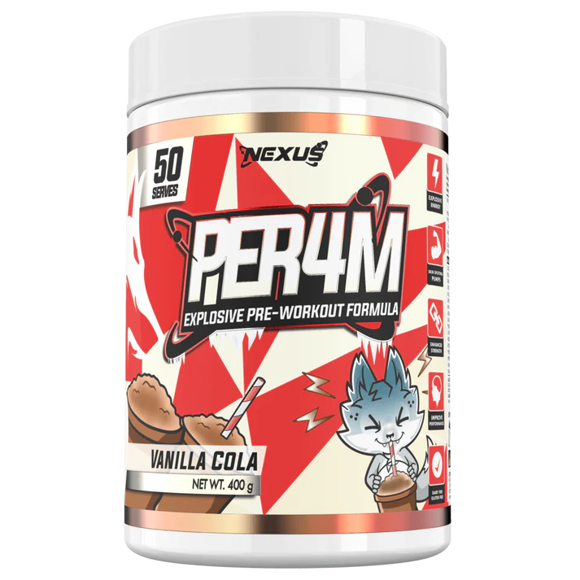
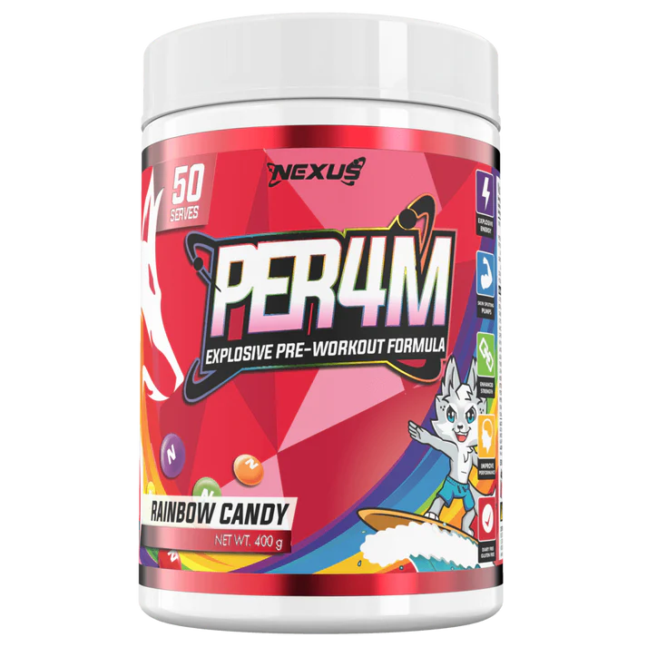
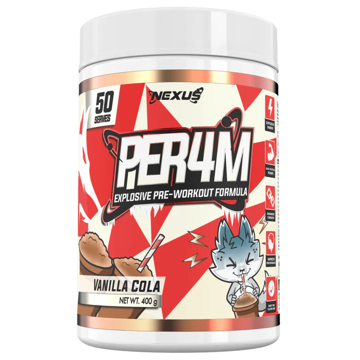
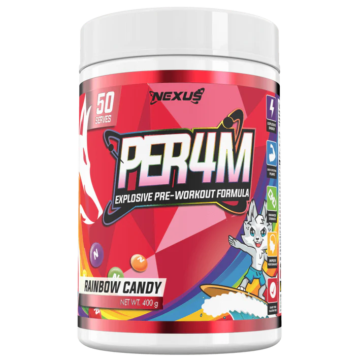

R1 PROTEIN FORMULA
Nexus bring us their NEW explosive pre-workout PER4M and are aiming to set a new industry benchmark! This all-in-one high stimulant formula covers all basis providing you with explosive energy, skin splitting pumps and enhanced focus & mental performance.
PER4M has been clinically dosed with 16g per recommended serving utilising 17 carefully selected ingredients and is available in 9 delicious, thirst quenching flavours allowing you to PER4M at your absolute best!
- Helps To Increase Energy
- Elevates your mood
- Provides Clean, Long Lasting Focus
- Increase Strength & Insane Pumps
Enhanced Performance: PER4M's formulation is centred around improving your athletic performance with 500mg L-Tyrosine, 100mg L-Theanine, 25mg Pterostilbene and 130mg of Theobroma Cacao, making this pre-workout the ultimate training partner.
Increased Strength: PER4M contains a load of ingredients to improve the users strength during a training session, push harder for longer with a clinical dose of 3200mg of Beta Alanine and 1g of Taurine.